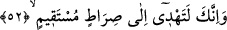

görür ve vasıtasız olarak O’nun hitâbını işitir. Perde olmaksızın hakkı görür. Çünkü
perde yaratıkların vasfı olup Hak Sübhânehü ve Teâlâ hazretleri, kendisini herhangi bir
şeyin perdelemesinden münezzehtir.
Hikâye edilir ki: İmam Cafer-i Sâdık (r.a.)’a bir adam, “Rabbimi bana göster” dedi.
İmam, “Duymadın mı Allah Teâlâ Mûsâ (a.s.)’a bile bu kadar büyük peygamber
olmasına rağmen «asla beni göremezsin» (el-A’râf, 7/143) buyurdu. Adam, “Elbette bu
millet-i Ahmediyyeden «kalbim Rabbimi gördü» diyen ve yine «ben görmediğim
Allah’a ibadet etmem» diyen olacaktır” dedi. Adam isteğinde çok ısrarlı olunca İmam
Cafer onun Dicle nehrine atılmasını emretti. Adam, “Ey Rasûlûllah’ın torunu! Yardım
et, kurtar beni” dediyse de İmam Sâdık: “Ey su, boğ onu” dedi. Birkaç defa daha yardım
istediyse de İmam oralı olmadı. Nihâyet adam insanlardan ümidini kesince: “Allahım
yardım et, kurtar beni” dedi. İmam Câfer Sâdık, “Onu getirin” dedi. Tutup getirdiler,
kulağına ve gözüne dolan suyu çıkardılar, kendine geldiğinde, “Hakk’ı gördün mü?”
dedi. Dedi ki, “Ağyârın hayali kaldığından, elimi uzattığımda perde vardı. Tamamıyla
ona iltica ettim ve hâlimi arz ettim, gönlümde bir pencere açıldı, oradan baktım ve
istediğim her şeyi gördüm. Çâresizlik olmadıkça bu durum meydana gelmez.” İmam
Sâdık,“Sâdık’ı çağırdığında gerçek sâdık değildin. Şimdi şu pencereden sokağa bak,
çünkü âlemin Rabbi oraya tecellî etmiştir” dedi.
Bütün bu açıklamalardan anlaşıldığına göre âyet, rü’yetin mümtenî olduğuna değil,
câiz olduğuna delildir. Ancak âyet, beşeriyet hâlinde rü’yetin mümteni olduğuna da
delâlet eder.
Şâirin ifâdesiyle:
Varlık, Hakk’ı görme konusunda toz ve topraktır,
Toz, görmeye mâni olur dikkat et.
52. İşte böylece sana da emrimizle Kur’an’ı vahyettik. Sen, kitap nedir, îman
nedir bilmezdin. Fakat biz onu kullarımızdan dilediğimizi kendisiyle doğru yola
eriştirdiğimiz bir nur kıldık. Şüphesiz ki sen doğru bir yolu göstermektesin.
“İşte” böyle güzel bir vahiyle veya diğer elçilerimize vahyettiğimiz gibi “sana da
emrimizle Kur’an’ı vahyettik.” Sana vahyetmezden önce “sen kitap nedir, îman
nedir”, kitabın muhtevâsındaki detaylar nedir, sana vahyettiğimiz ruh nedir “bilmezdin.
Fakat biz onu kullarımızdan dilediğimizi,” tercihini hidâyetten yana kullananları